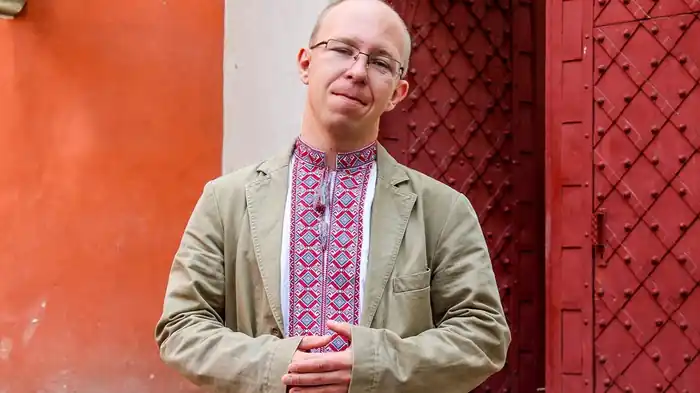
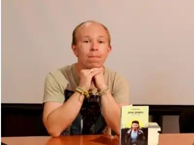

Олексій Чупа (30 серпня 1986, Макіївка) — український поет і прозаїк.
Навчався в Макіївському металургійному технікумі на спеціальності хіміка-технолога, вивчав українську філологію в Донецькому національному університеті. Працював машиністом на Макіївському металургійному заводі. Через війну на Донбасі переїхав до Хмельницької області у 2014 році. Стипендіат програми "Gaude Polonia" (Польща, 2015).
Книги Олексія Чупи "Бомжі Донбасу" та "10 слів про Вітчизну" ввійшли до довгого списку премії Книга року BBC 2014 року. Фіналіст літературної премії імені Джозефа Конрада 2015 року. Окрім згаданих, автор книг поезії "Українсько-російський словник", "69", "Кома" та прози "Казки мого бомбосховища", "Акваріум", "Вишня і я".